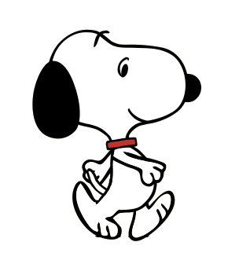

Hello üëã
Je m'appelle Alexis Gardin
Et je suis ✏️ UX UI designer & expert Webflow.
Originaire de Normandie et anciennement chef de projet, c'est après un voyage d'un an en Nouvelle-Zélande que je décide de m'orienter vers les métiers du web. S'en suivent 2 bachelors dans les métiers du web (chef de projet digital + Designer Web) ainsi qu'une certification professionnelle d'UX designer délivré par l'UX design institute de Dublin.
Me contacter 